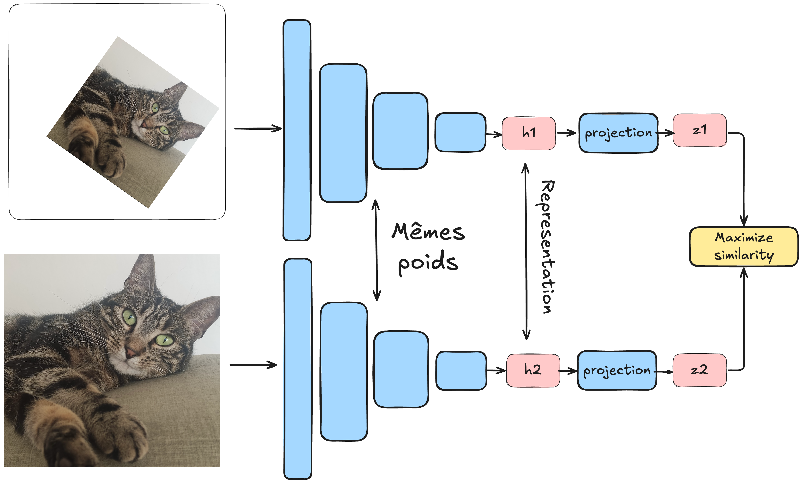

无监督对比学习#
当今，深度学习领域的大量研究都集中在无监督学习上。如我们在第四课自编码器中所见，无监督学习是指在没有标注数据的情况下训练模型。这种方法的主要优势在于大幅降低数据准备的成本与工作量。正是这种学习方式推动了自然语言处理（NLP）领域的快速发展，并实现了DALL·E生成高质量图像、SORA生成视频等令人印象深刻的应用。
在第五课自然语言处理（NLP）中，我们学习了如何对文本进行无监督学习（只需获取任意文本，训练模型预测下一个字符即可）。但在图像处理方面，我们并未深入探讨，仅在第七课Transformer中简要提及了CLIP模型。
如何将对比学习应用于无监督学习？#
CLIP模型#
我们已在第七课中介绍过CLIP模型，它采用批内对比学习方式训练。与之前不同的是：
视觉Transformer处理批次中的图像
文本Transformer处理每张图像的描述文本 模型通过对比学习训练，使得同一图像-文本对的嵌入向量距离最小化，而不同对的距离最大化。
CLIP模型虽然使用了对比损失函数，但并非真正的无监督学习。它依赖于图像-文本对作为训练中的”伪标签”。

图像的无监督学习#
无监督学习的核心是不依赖标注数据。SimCLR方法提出了一种将对比学习应用于此场景的技术：
处理一个批次数据，每个样本为图像对
每对图像实际上是同一张图像经过不同数据增强变换后的结果（详见数据增强 bonus 课程）
通过孪生网络（两个相同的网络）分别处理每张图像
模型训练目标：最小化同一图像对的表示距离，最大化不同图像对的表示距离


这种方法中，数据增强至关重要，需要精心设计多样化的变换策略。我们可以类比正负样本对：
正样本对：来自同一原始图像\(x\)的两个变换后图像\(x_i\)和\(x_j\)
负样本对：来自不同原始图像\(x\)和\(x'\)的变换后图像\(x_i\)和\(x'_j\)
通过这种方式，模型能够在无标签情况下学习到图像的有效表示，可以区分不同对象的图像，尽管它并不知道这些对象具体是什么。
这种方法的优势#
这种模型的训练价值何在？训练完成后能做什么？
我们可以类比语言模型：
首先在大规模互联网数据上进行预训练
然后针对特定任务（如ChatGPT的聊天机器人）进行微调
图像领域同样如此：通过对比学习在数十亿图像上训练的模型，可以作为通用基础模型，之后针对具体任务（如图像分类）进行微调。
注：fine-tuning（微调）和transfer learning（迁移学习）将在后续课程详细讲解。简单来说，就是将预训练模型应用于不同任务的技术。
无监督学习中对比学习的替代方法#
需要注意的是，对比学习并非图像无监督学习的唯一方法。
自编码器#
我们已在第四课介绍过自编码器，它能学习到图像的有效表示。论文《Masked Autoencoders Are Scalable Vision Learners》证明，掩码自编码器（Masked Autoencoders）能够学习到非常有用的图像表示。

生成对抗网络（GAN）#
本课程尚未介绍GAN。简单来说，GAN由两部分对抗训练：
生成器：创造假图像
判别器：区分真实图像与生成图像
通过这种对抗训练，可以得到能生成高度逼真图像的生成器，且不需标注数据。几年前，GAN是主流的图像生成方法（如今已被同样无监督的扩散模型所取代）。

变换预测#
另一种方法是预测图像所施加的变换。例如：

自监督蒸馏#
近期，基于知识蒸馏的方法重新采用图像变换（类似对比学习），但不使用负样本对。为避免模型”崩溃”（collapse），研究者们设计了多种技术。详见论文DINO。
注：知识蒸馏概念将在后续课程中详细讲解。

注：
上述无监督学习方法列表并不完整，但已涵盖主要方法
GAN和扩散模型虽然也是无监督学习，但通常不用于构建可针对特定任务微调的基础模型